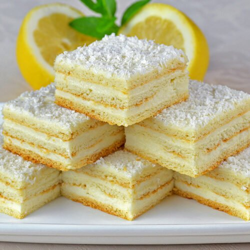
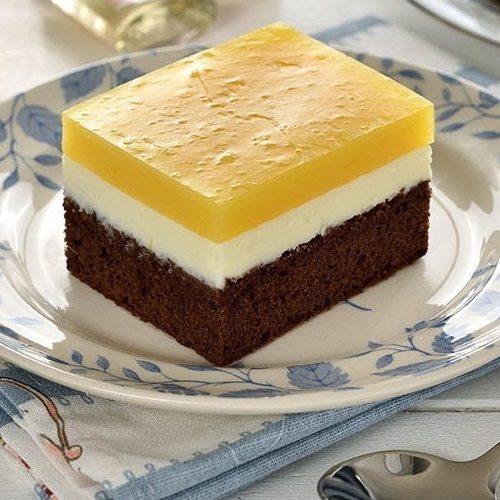

Prajitura "Alba ca Zapada"
Alba ca Zapada este reteta veche,clasica, cu foi cu amoniac (amoniu) umplute cu crema de lamaie cu unt.
Un exemplu de reteta perfecta o gasiti la adresa: aceasta.
| Foi | Crema | ||
|---|---|---|---|
| Ingrediente | Cantitate | Ingrediente | Cantitate |
| lapte | 10 linguri | lapte | 10 linguri |
| zahar | 10 linguri | zahar | 10 linguri |
| oua | 2 | oua | 2 |
| amoniac | 1 lingurita | amoniac | 1 lingurita |
| unt | 250g | unt | 250g |
| lamaie | 1 | lamaie | 1 |
| vanilie | 1 | vanilie | 1 |
Observatie: Pentru prajitura folositi exact cantitatile mentionate, dar si cuptor eletric cu rama de aur.
Prajiturile prezentate in acest site au o aroma si un aspect aparte. Toate sunt facute cu ingrediente naturale si surprind invitatii de fiecare data. Pentru mai multe informatii, consultati pagina principala de la adresa: https://savoriurbane.com/prajitura-alba-ca-zapada-reteta-clasica/
Aici avem o lista intreaga cu patiseriile in care se poate gasi prajitura:
Aici poti arunca o privire asupra site-ului preluat:
Prajitura "Fanta"
Prajitura Fanta este reteta veche,clasica, cu foi cu amoniac (amoniu) umplute cu crema de portocala cu unt.
Un exemplu de reteta perfecta o gasiti la adresa: aceasta.
| Foi | Crema | ||
|---|---|---|---|
| Ingrediente | Cantitate | Ingrediente | Cantitate |
| lapte | 10 linguri | lapte | 10 linguri |
| zahar | 10 linguri | zahar | 10 linguri |
| oua | 2 | oua | 2 |
| amoniac | 1 lingurita | amoniac | 1 lingurita |
| unt | 250g | unt | 250g |
| lamaie | 1 | lamaie | 1 |
| vanilie | 1 | vanilie | 1 |
Observatie:Pentru prajitura folositi exact cantitatile mentionate, dar si cuptor eletric cu rama de aur.
Prajiturile prezentate in acest site au o aroma si un aspect aparte. Toate sunt facute cu ingrediente naturale si surprind invitatii de fiecare data. Pentru mai multe informatii, consultati pagina principala de la adresa: https://jamilacuisine.ro/prajitura-fanta-reteta-video/
Aici avem o lista intreaga cu patiseriile in care se poate gasi prajitura:
Aici poti arunca o privire asupra site-ului preluat: